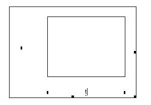
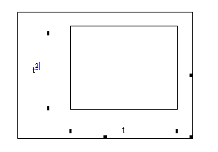
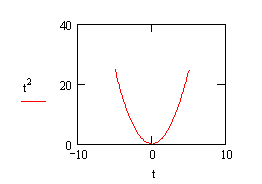

Creating an X-Y Plot |
To create an x-y plot:
Define a range variable for the range of values over which to plot the expression, for example
t := −5, −4.8 .. 5
Choose Graph > X-Y Plot from the Insert menu, or type @, to create an x-y plot operator.
In the middle placeholder underneath the x-axis (horizontal axis), enter the range variable.

In the middle placeholder beside the y-axis (vertical axis), enter the
expression you want to plot.

Click away from the plot or press [Enter]. One point is plotted for each value of the range variable and, unless you specify otherwise, they are connected with straight lines.

| Graphing Vectors and Matrices |
Graphing vectors is much the same as graphing expressions, except that the range variable is used as an index for the vector, instead of an argument for the expression. In this case,
Define a range variable from the ORIGIN to the last element of the vector.
Press @ or choose Graph > X-Y Plot from the Insert menu to create an x-y plot.
Place the subscripted vector on one axis and the range variable on the other.
You can also plot elements from two vectors, for example, a set of x-y data points. Create a graph as above, then enter the x-values vector in one axis placeholder and the y-values vector in the other. If the vectors are of the same length, you can omit the range variable and subscripts. If the x and y values are matrices of the same size, they will be plotted by matching columns from the x-Matrix with columns from the y-Matrix. This is a convenient way to make waterfall plots.
| Modifying the Appearance of an X-Y Plot |
You can modify the way a plot looks by adjusting the axis limits, changing the formatting options, adding markers, and other options. For example, if you want to create more space between the top of a plot and a trace, click on the plot, click on the number or placeholder at the top of the y-axis, and change the number to a value that is larger than the maximum value on your trace. This changes the scale of the y-axis, but not the calculated y-values of your trace. You can put any Mathcad expression into any plot placeholder. For example, you can associate the maximum y-axis value with the maximum value of your expression by calculating it using the max or root functions.
| Behavior of Two-dimensional Plots |
2D plots always attempt to render curves in the most readable way. For example, if a vector of values contains NaNs or overflow values, these are skipped, and the rest of the points plotted. For example, try tan(x) vs. x. You may have to add more points to a plot to see all your features, but 2D plots also try to detect singularities and render them as such, rather than just connecting points calculated on either side of a singularity. For example, try zooming out on tan(x) vs. x over the range −100 to 100.
In addition, 2D plots try to render as much information as they can, even if there are errors or disallowed expressions in some values. For example, if you specify a vector that contains mostly real values, but has some complex values, the complex values are skipped, and the rest of the values plotted. If you plot a vector vs. a range variable that contains more elements than the vector, all available vector elements are plotted, and the rest of the range values are ignored.
You can graph any expression against any other expression, as long as they share the same independent variables. This is useful for generating parametric plots.
You can also graph more than one curve on a graph, and you can select a secondary y-axis for traces of different y-scales.
Complex or imaginary points are not plotted. To plot the real or complex part of a point, use the Re and Im functions.
If a plot does not appear as smooth as you would like, try using a smaller step size in the range variable.
When plotting expressions, if you do not define a range for the dependent variable on the x-axis, Mathcad uses −10 to 10 as the default. This is a QuickPlot.
You can create a polar plot using similar steps.
You can modify the appearance and settings for a plot by double-clicking on it.
You can also resize the graph by clicking on the handles and dragging.